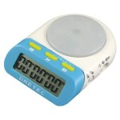

- The GoldenEye Principle: Flow, Dopamine, Spirituality and How to Make Everything As Fun as Video Games and Multiplayer Bedroom Sports
- How Zombie Gunship Taught Me All I Need to Know To Make My Real Life Awesome (And So Can You!): Gamifying Real Life For Fun and Profit and (Almost) For Free Using the Awesome New Technique of Randomized Timeboxing
- OMG: A Public Service Announcement from Captain Obvious
- All I Ever Needed to Know in Life, I Learned from Cloud Storage
- More Timeboxing Insights: Ramp Scaling and Polar Switching
- Timeboxing Trilogy, Part 1: What Is Timeboxing, Why Does It Work, And Why Should You Care?
- Timeboxing Trilogy, Part 2: Nested Timeboxing
- Timeboxing Trilogy, Part 3: Dual Timeboxing
- Timeboxing Trilogy, Part 3.5: Timeboxing Turns Work Into Play
- Timeboxing Trilogy, Part 4: Decremental Timeboxing
- Timeboxing Trilogy, Part 5: Incremental Timeboxing and Mixed Timeboxing
- My (Current) Timeboxing Tools: Hardware Timers
- Timeboxing Trilogy, Part 6: Q&A
- Timeboxing Trilogy, Part 7: Isn’t Timeboxing Just A Waste of Time?
- Timeboxing Trilogy, Part 8: Don’t Those Super-Short Timeboxes Make Timeboxing Meaningless?
- Timeboxing Trilogy, Part 9: Birthlines And Timeboxing
- Timeboxing Trilogy, Part 10: Timeboxing, Tony Schwartz and Recovery
- Decremental Timebox → Real Time Conversion Table
- Can Timeboxing Help Me Do Really Big, Hard Things?
- Three Minutes Of…
- Nothing Is Hard
- How To Get Nothing Done: The Art and Science of Wresting Defeat From the Jaws of Victory
- How to Make Miracles Happen and Get Called a Genetically Gifted Genius
- Remember That You Are, Were and Will Always Be Human: Infinite in Possibility and Finite in Action
- Why America Doesn’t Win Wars Any More and What (Ironically) That Can Teach You About Learning Languages
- The One True Secret to Being Happy, Productive and Sane Forever
- How (and Why) to Make and Use Entropy Bombs
So, with all this talk of timeboxing lately, I’ve conveniently left out the details of what tools I (currently) use to actually implement it all. There’s a good reason for that: shorter articles are like shorter work periods; they’re more likely to actually happen. Long articles are a burden to you and me — you have to wade through all this text; I have to edit them to make sure they’re coherent. With shorter posts, I get to be both to-the-point and disjointed — like a Michael Bay movie or something.
…Like you needed to know all that…
Anyway, so, yeah, timeboxing. Well, fundamentally, timeboxing uses just one type of tool: a (countdown) timer with some form of alarm/notification function. There are two basic types of timers:
- hardware — actual physical timers, and
- software — timer applications that run on a more general purpose computing device like a PC or an iPad.
I use hardware timers almost exclusively because, well, because we all know that software can be full of it sometimes. Like, YouTube is great, but IMHO, it still lags behind satellite TV in some crucial ways. The great thing about software is that it can and does improve, but those improvements often take time.
We can’t sit around waiting for our Palm Pilots and laptops and iPads to boot, so we grab pen and paper.¬†Similarly, all the clicking and mouse-moving involved in using a software timer can get very old very fast, especially if you’re doing “microtimeboxing” with 60~90 second blocks (see dual timeboxing, decremental timeboxing for details). So, for now, hardware is the way to go. Besides, not all my timeboxing is done in computer-friendly environments…
Since I live in Japan, I got all my timeboxing devices (isn’t that the sexiest way of saying “egg timer” you’ve ever heard?) here. However, statistics show that a slight majority of the readers of this blog live in the US, so, YTMV — your timer may vary üòõ .
With that rather unnecessary introduction out of the way, let’s just talk about hardware timers today and leave the software for another post.
| Make/Model/Version | Pros | Cons | Comments |
| DRETEC T-186 |
|
|
Despite the crappy quality, the pros outweigh the cons. It’s a great for studying and other desktop activities.When doing dual timeboxing, I use this as the small timer and the T-135 as the big timer.The massive start-stop button is very satisfying to push. You get a great feeling of…I dunno…something. Accomplishment? “Yeah, motherlover! *PUSH*!”…
A good buy overall, despite the flaws. The silent/flashing mode makes this great for places like libraries and cafes. |
| DRETEC T-135 |
|
|
I have 3 of these in my little Japanese abode. ‚ÄôNuff said.The unit’s a really nice size, about the size of a stopwatch. Unfortunately, since it is essentially a kitchen timer designed to be stuck on flat surfaces like refrigerator doors, you can’t really carry it around like a stopwatch.But then…that’s sort of like complaining that your screwdriver makes a bad fork… üòõ |
| DRETEC T-180 |
|
|
Good from far, far from good. Seems like a good idea on paper, but sucks in the flesh. Strongly disrecommended. |
| SEIKO TIMEKEEPER VIB SSBJ023 |
|
|
Dials rule. More things should have dials on them. iPod taught us that.The all-black SSBJ01, the little sister model to this one,¬†looks nicer and costs less, but (AFAIK) doesn’t have the vibe feature.I use this in shops a lot because I actually used to get lost in a “selection trance”/”decision loops” [“maybe I should get this one…oh wait, but this one’s cheaper…but I like this other one more…maybe I should check the other store first…oh wow, they have these around corner; I wonder what else I’ve missed!”], trying to make perfect decisions. By timeboxing my shopping, I can get in, stay in long enough to have fun but not so long as to be wasting life, get out, and get on with life.
The silent/vibrating mode makes this great for places like libraries and cafes. |
That concludes today’s hardware discussion. Tune in some other time for information on software timers. Oh yeah, if you have any hardware/software timer reviews or recommendations of your own, feel free to post or link to them right here in the comments section. üòõ
Got myself a nice stainless steel egg timer a week ago for only $12 Australian. Sturdy and battery free. I gotta recommend em.
You can always use a free online timer like ipadstopwatch.com
Yeah, hit us with a ÂûãÁï™ üôÇ
I have no idea why, but you can buy them on amazon. This is the exact model.
www.amazon.com/Norpro-Stainless-Steel-Timer-Long/dp/B00004UE6Z
I’m not sure I understand the alarm modes of the DRETEC T-186. 1 second and 15 seconds? ʵÅÁü≥„Å´ you still don’t do 1-second timeboxes, do you?
違ええんだよ、博士（笑）。
それは飽く迄もアラーム（終了通知）の長さだっつーの！ハハハ
HIIT Timer (Intervals) by Chris Gummer
for iPod and iPhone
I have two intervals there:
2 minutes and also the signal when last 30 seconds are started
I use it for reading the book to prepare to an exam. I interval – 1 page of A4 format.
So I am not getting bored and too slow.
Also I have an estimated number of intervals (rounds üòâ ) for a chapter.
And I try to beat this estimate every time.
itunes.apple.com/us/app/hiit-timer-intervals/id309423464?mt=8
though if not ideal, but it cost me only 2 USD
Apimac timer for Macs. Free, can run multiple simultaneous timers for dual timeboxing, pleasant “ding” sound, very obvious how to use.
Most cellphones have a timer i belive, works for me.
you know i didn’t even think of that. thanks for the suggestion!
# Online Stopwatch (from website of same name)
*Pro: Free, can have multiple open at once, nice loud sound.
*Cons: Must connect to the internet one time to work.
# IPhone (standard clock)
* Pros: Can set different ring tones or create own and use your own (i.e., STOP STUDYING JAPANESE! “wink”), multiple alarms, 3 different types of alarm available, easy to set up.
* Cons: As Khatz said, it gets to be a hassle after awhile.
Sidenote:
My personal experience so far with time boxing is that it works well. The key for me is I need to obey my timeboxes as I can easily get caught up in a 1 hour SRS session if I don’t (ignoring other important things or just not ‘doing’ other things in Japanese, which is super important as well – people learn better through variety). I also find that if I ‘obey’ my timer my recall is vastly better as a pay off.
As Jon mentioned, Online Stopwatch (www.online-stopwatch.com/) is brilliant. You can set your timer, then once it ends hit “reset” then “start” — it retains the last time you had it set to, so if you’re doing a bunch of 90-second boxes, it’s pretty easy to restart them. I use it all the time.
Fer anyone with a Japanese DSi and who’s like me and carries it around with them wherever they go, there’s an application suite of sorts (kind of a stretch to call it that, haha) on the DSiWare shop called „Åß„Åç„Åô„Åé„ÉÅ„É≥„ÇØ„É´„Éë„ÉÉ„ÇØ (for 500 points, if I recall correctly) and it’s got a timer on it. It’s very simplistic, but you can set times up to 99:59, and it’s fairly quick and easy to reset (not as quick as Online Stopwatch, mind you, but quick enough to be convenient when you don’t have access to the internet).
Arg! I want the Dretec timer but the only place I can find that sells it is amazon.co.jp and I don’t want to attempt ordering things in Japanese. Anyone see this sold anywhere else? (Great post as usual, Khatz!)
I posted this elsewhere, but‚Ķ here goes again üòõ
It’s a Mac OS X app called Áô∫Ë°®„Çø„ǧ„Éû„ɺԺà„ÅØ„Å£„Å¥„Çá„ÅÜ„Çø„ǧ„Éû„ɺԺâ.
Free.
Direct download: www.tuat.ac.jp/CenterStaff/Sakura/software/tuatimer/TUATimer-Release1-1.dmg
Pros: It’s free. You can set up to five timers at once. Has three different chime sounds if you want to distinguish them. And best of all, it’s in Japanese!!
Cons:
Only for Mac, so if you don’t have one, you’re out of luck‚Ķthere was a reference to Windows users in the app description but in all honesty I didn’t quite understand üòâ Well, I understood, but I couldn’t be bothered into finding the “„Åï„Çè„ņ„Åï„Çì‰ΩúÔºàVBÁâàԺ┠that they ask „ÅîÂà©ÁÅè„ņ„Åï„ÅÑ”.
Also, it’s slightly strange in the development‚Ķ i.e., Developer-san didn’t bother to change the title of the window from “Window” and in the part of the menu bar stating the app name, it still says “NewApplication,” all all the menu bar items are in English, although this isn’t too big of a deal since you really do NOT need the menu bar, at all. Maybe to quit, but you can always use Cmmd-Q for that.
Notes: When you set five timers, just keep in mind that they all start at the same time. Also, I don’t think I quite grasped the intent of the app entirely, so after the first two timers the displays start counting up, but no problem because the other timers will sound anyway.
Enjoy! üòÄ
Please, please, please say that the software session will have some goods for us linux-loving ajatters?
No software is actually needed apart from what any GNU/Linux box already has.  I usually just run something like
sleep 3m; mplayer beepbeepbeep.mp3
in the console, which in this case waits for 3 minutes (sleep 3m) and plays back a sound (mplayer beepbeepbeep.mp3 in my case, but anything else can be done instead — one could, for example, raise a pop-up notification, or send a signal for the application being timeboxed to terminate so you would e. g. only watch porn for 5 minutes before it closes automatically to try to manage porn addiction or something).¬† This is how I usually timebox my sleep (i. e. set an alarm — then it’ll be something like sleep 7h in a quite literal sense).¬† If I used it regularly, I’d just create a bunch of scripts like w1m, w2m, w3m etc. to efficiently run 1 minute, 2 minutes, 3 minute timeboxes, and then maybe bind them to some icons in whatever window manager I’d happen to use at the time.
Anyway, I just got myself this Seiko SSBJ23 stopwatch and it is really neat; now I can finally measure and timebox everything in my life and not just things I do near a computer.¬† One thing this article forgot to mention is that it’s actually water and shock resistant so it can be taken virtually anywhere.¬† For example, I now can timebox my shower and even sauna time where no lesser device would survive for long.
I’m in Okinawa now and you know those famous 100 yen stores. I just bought a digital kitchen timer 100YEN.
Of course its not nice but I will try it fo a while :))
It’s a Mac OS X app called 発表タイマー（はっぴょうタイマー）.
Direct download: www.tuat.ac.jp/CenterStaff/Sakura/software/tuatimer/TUATimer-Release1-1.dmg
Pros: It’s free. You can set up to five timers at once. Has three different chime sounds if you want to distinguish them. And best of all, it’s in Japanese!!
Is there an alternative in English? Went to the URL above and no longer there. Msg denies me access to the server.
DRETEC t-186wt
anyone find a seller in the USA?
SEIKO TIMEKEEPER VIB SSBJ023
anyone find a seller in the USA?
THank you,
Tal
THank you,
Tal M in Atlanta.